Java 开发环境配置
1、新建 Java 工程
打开开发工具 Intellij IDEA，点击菜单 File > New > Project...

2、配置 JDK
点击右上角“New”按钮，选择 JDK 安装的路径(Windows 与 MacOS 不一样，选择你自己安装 JDK 的 路径)

配置好 JDK，点击下一步“Next”

再下一步“Next”
3、设置项目信息
设置项目存放地址，选择刚刚新建的文件夹。

设置项目名称，之后点击完成“Finish”:

选择ok
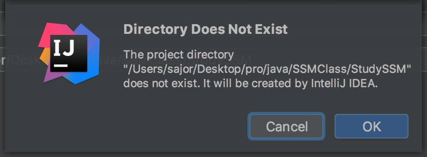
4、拷贝开发 Spring 引用的 jar 包
在工程根目录创建 lib 目录。右键点击工程名称，New>Directory

输入 lib

点击 ok
把附件中给的 spring 相关 jar 包拷贝进工程刚刚新建的 lib 目录
拷贝完成的结果如下图:
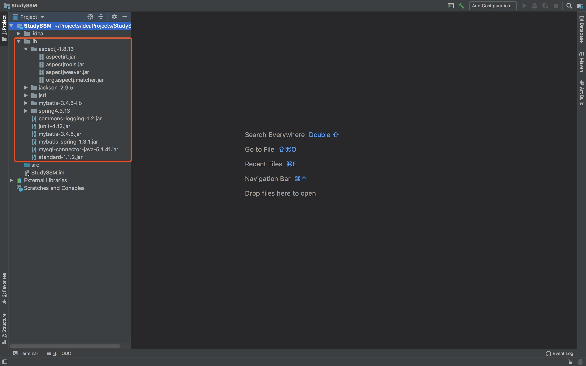
5、设置 Libraries(设置 IDEA 的 classpath)
点击菜单 File>Project Structure...

选中“Librries”， 点击“+”按钮， 选择“Java”

选择 lib 目录中的 spring4.1.13， 点击open
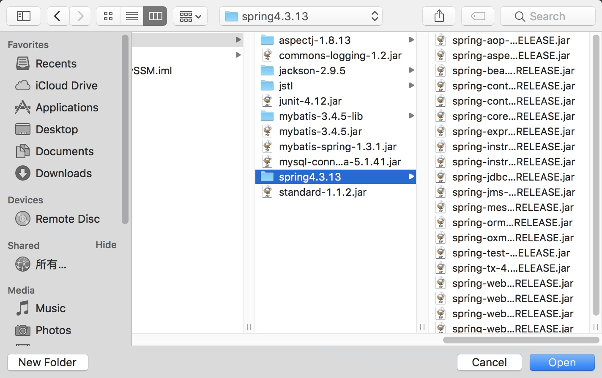
点击 ok

重复上一步骤，引用 commons-logging-1.2.jar 包，选择 commons-logging-1.2.jar，点击 ok
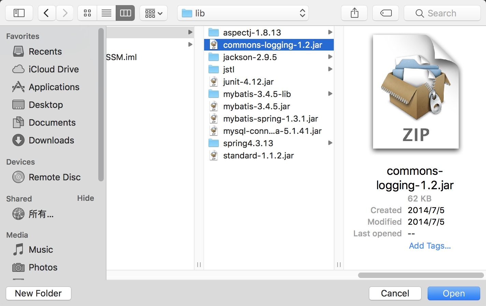
再点击 ok 退出。目前开发 spring 用到的 jar 已经全部引用了。
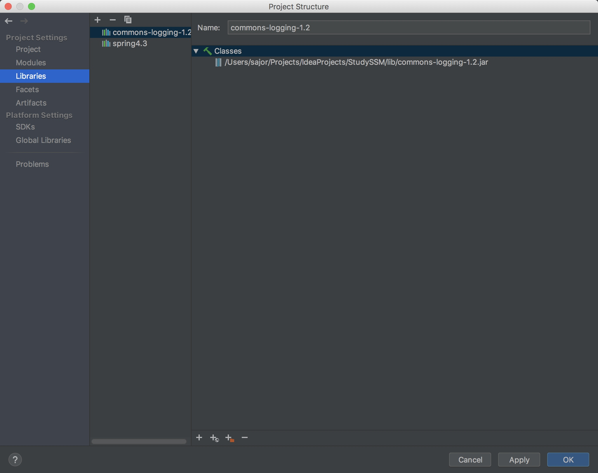
6、设置项目代码和资源目录
点击菜单 File>Project Structure...选择 Modules，选择 Sources，点击右侧 src------后面的“x”号 点击 ok 按钮。

右键点击 src 目录，New Folder...
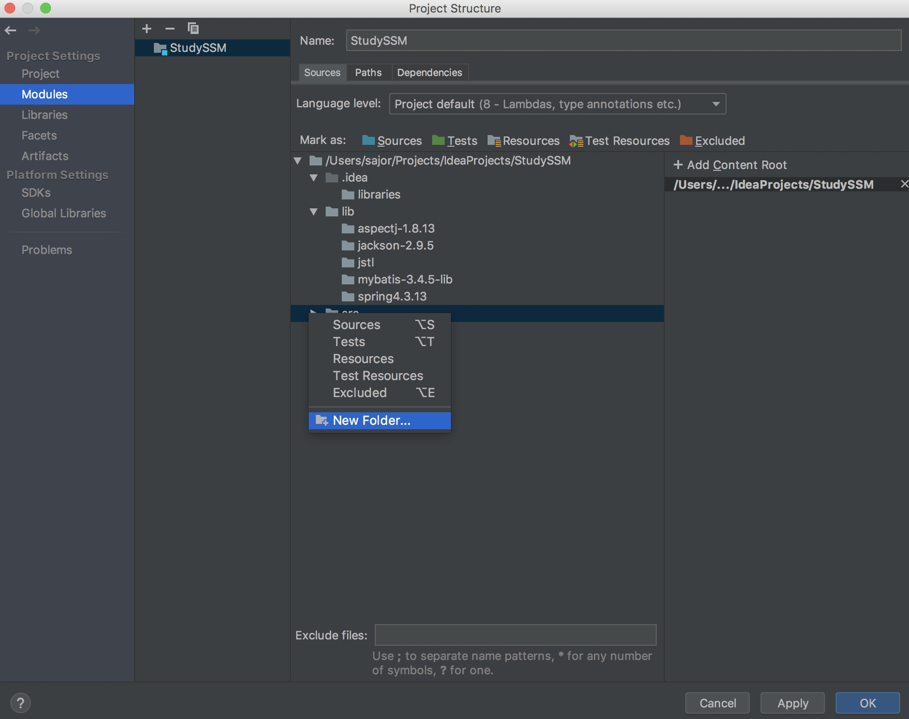
创建一个 main 目录, 重复创建目录步骤，在 src 下再创建一个 test 目录，用于存放测试代码。
用同样的方法，在 main、test 目录下分别再创建 java、resources 目录，最后 的目录结构如下:
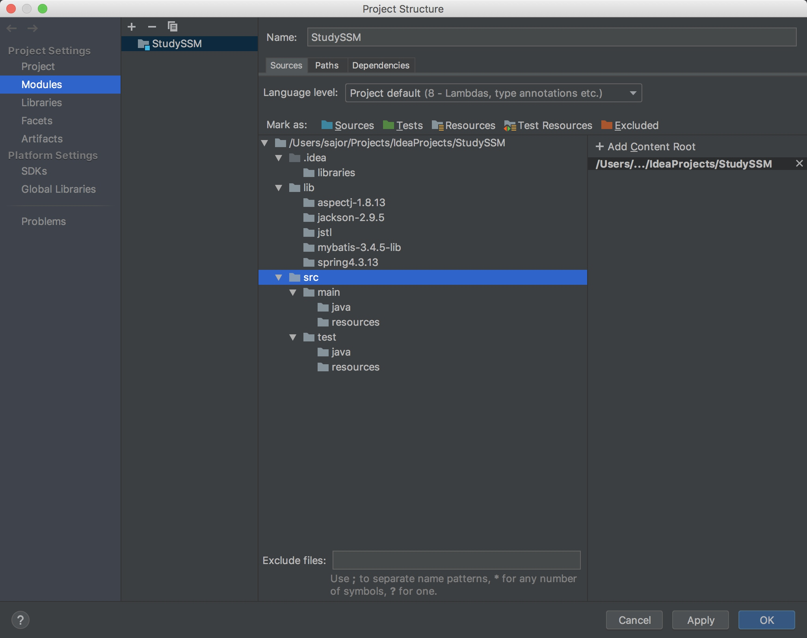
下一步设置 IDEA 的 modules，告诉开发工具你开发的代码、配置资源文件放 在哪个目录
选择 Modules，选择 Sources，选中 src>main>java，点击上面的 Sources
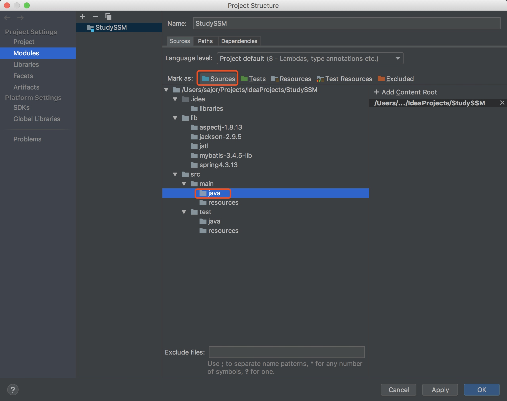
选中 src>main>resources，点击上面的 Resources
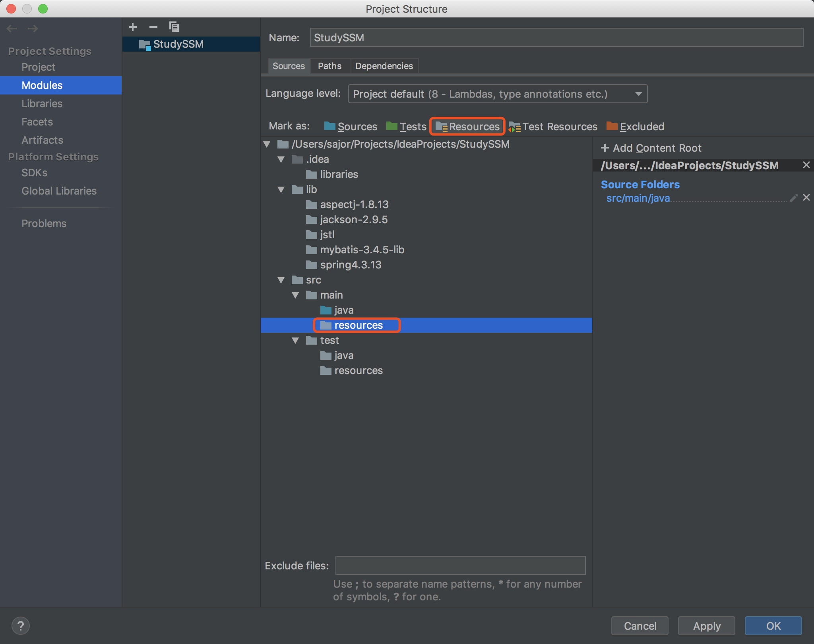
同样的方法设置 test 的代码路径，资源路径

到这，项目已经配置完成。
7、创建包结构
右键 src>main>java，点击 New>Package
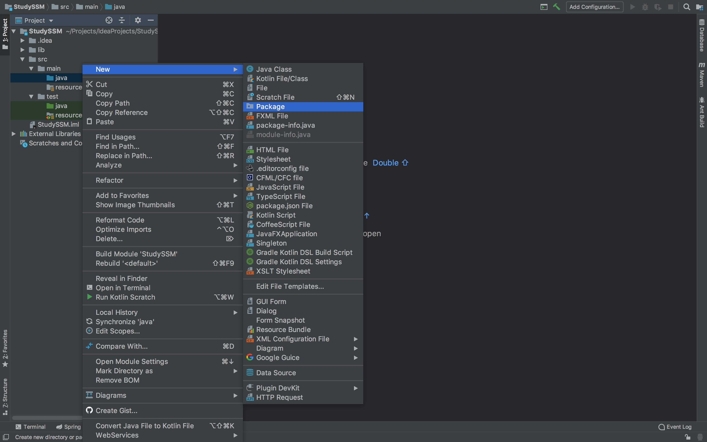
创建包 com.sajor.study
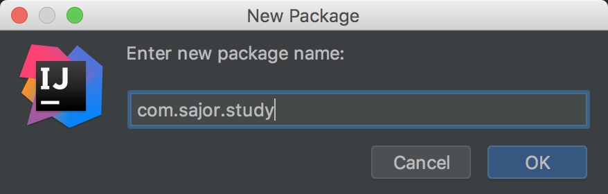
右键 src>test>java，点击 New>Package 创建包 test.com.sajor.study。 到这，代码资源目录搭建完成。

- src>main>java:存放代码
- src>main>resources:存放配置资源文件(xml、property 文件)
- src>test>java:存放测试代码
- src>test>resources:存放测试配置资源文件(xml、property 文件)
GitHub 本系列文章代码均上传至本人的GitHub，每完成一章上传一次，所以每一次commits的修改内容均可以在这里看到，方便大家学习。
本文由 Sajor
创作，采用 知识共享署名4.0 国际许可协议进行许可
本站文章除注明转载/出处外，均为本站原创或翻译，转载前请务必署名
最后编辑时间为: 2019-07-27T22:54:08+08:00